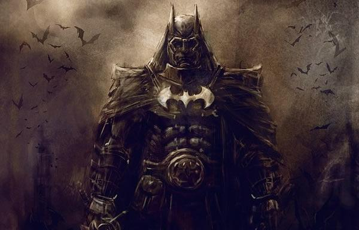

Being Sherlock Holmes:
A Gentleman’s Guide to the Investigator
With the release of the ACG playtest we were introduced to a new Alchemist/Rogue hybrid. This class drew its inspiration from a certain world’s most famous detective and among its abilities are a number of ways an intelligent character can track, discover, and subdue his opponents.
The investigator is a complex class with many subtle nuances which this guide will look to explore in its entirety. It can be a fun and remarkably cinematic class given that it possesses a class feature that is reminiscent of various stunt systems such as that included in the Eberron campaign setting.
Very Basic Tips
- Be smart with your inspiration. Dying with a health potion within reach or healing spells memorized is pretty embarrassing. Equally embarrassing is choosing to fail a save or miss a critical attack with two inspiration available.
So don’t be stingy. And don’t be wasteful.
- You are greater than the sum of your parts. Your mutagen isn’t as good as an alchemists. Your studied strike does not deal the damage of a sneak attack, your extracts are limited compared to the alchemist. However when you actually combo your abilities together you easily outfight a rogue and often an alchemist while sometimes outfighting martial classes and you can still out skill all of them. Never underestimate your potential. Even a non-combat investigator can prove a combat terror.
- You are better than a rogue. No joke. Yes I like rogues. But, I should say I like the concepts and archetype of the rogue. Objectively speaking however there’s no denying the investigator flat out wins. You get all the rogues nicer tricks while getting all the alchemists best ones.
And if you disagree that’s fine. But, given everything I’ve seen I have to say the rogue’s positive points on this are very few and very far between.
- The Early Levels suck. Sad to say but levels one through three are the roughest for you. You don’t get mutagen until 3rd at least and studied combat until 4th. So you’re going to be relying on inspiration to carry you through tough fights. In this at least the rogue and alchemists have a solid edge.

Table of Contents.
The Investigator at a Glance
Investigator Talents
Archetypes
Extracts
Build Types
IMPORTANT NOTE: Due to a very recent update to the Spell Like Ability Faq certain builds that use Arcane Strike are no longer legal. Until I can get around to updating the guide simply substitute Arcane Strike with the feat of your choice. Arcane Strike is not necessary in any of the builds for them to work. So, if you found a good substitute by all means feel free to use that instead.